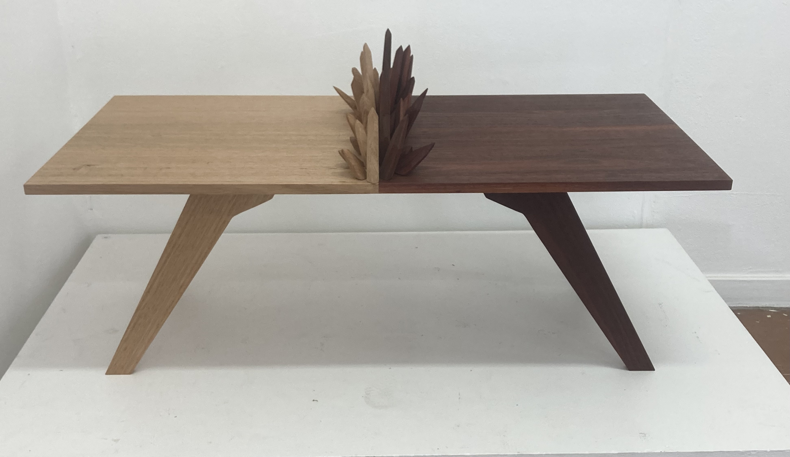
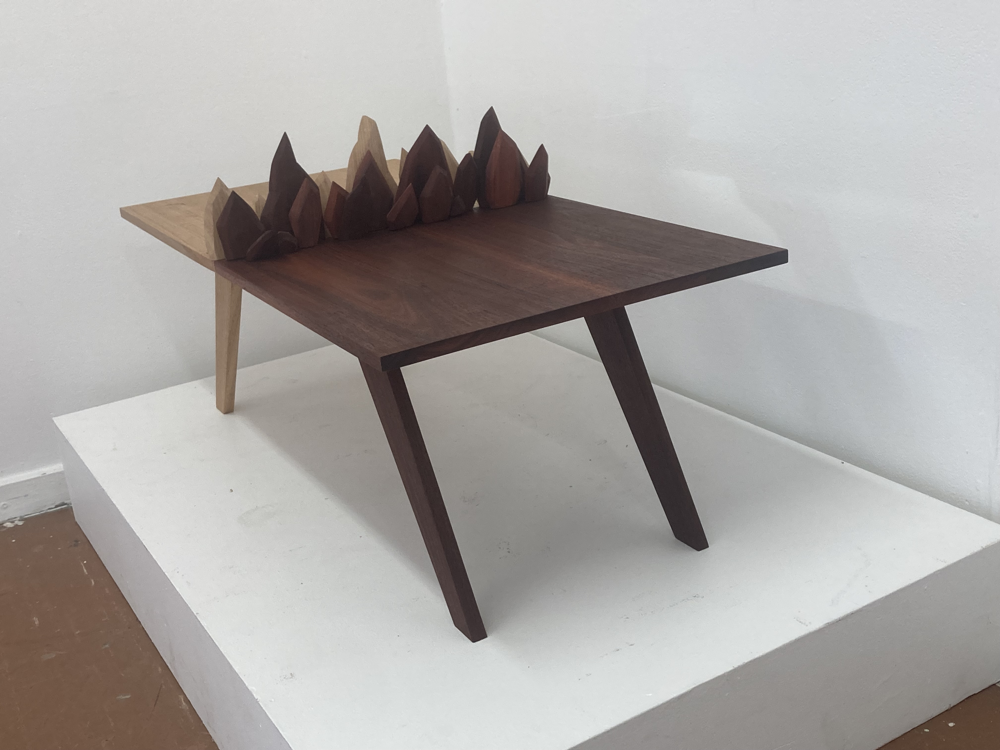
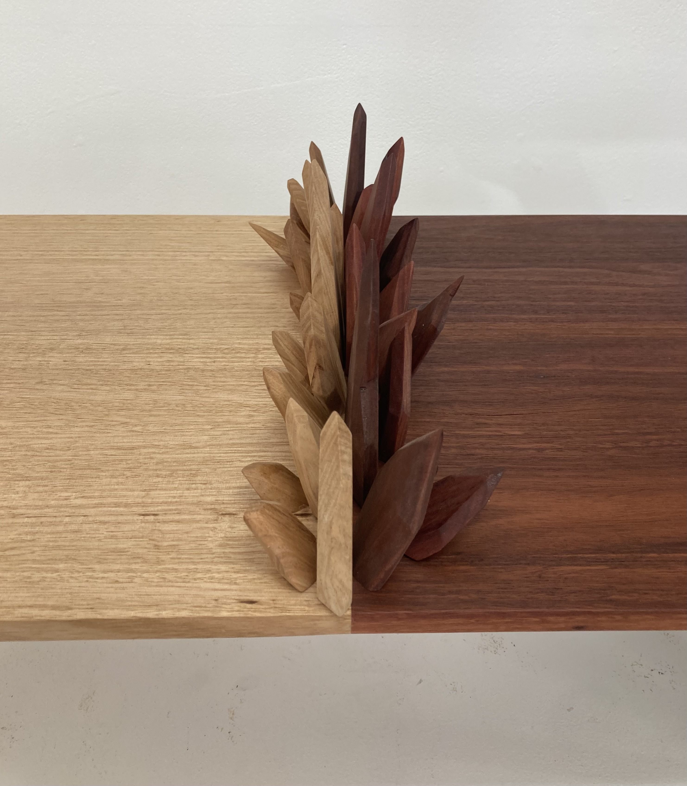
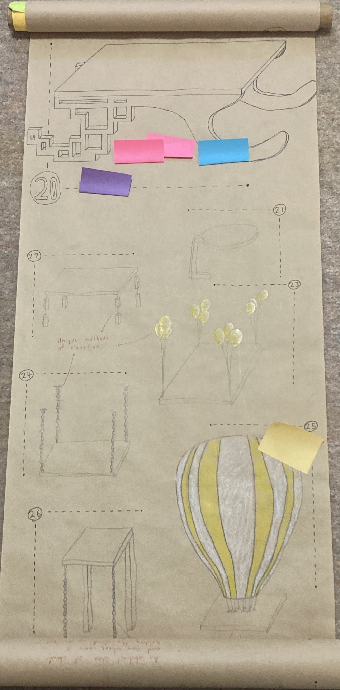
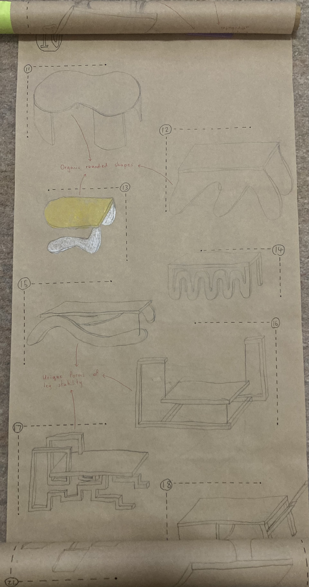
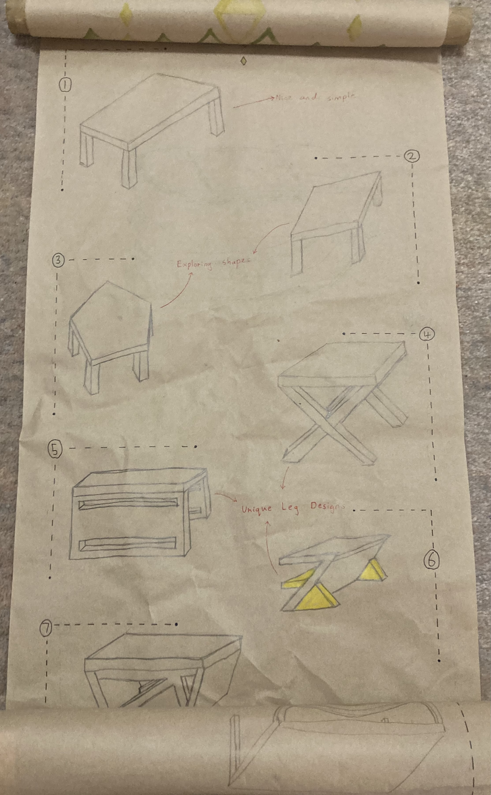

TIMBER / 01
Fragmented — Fine Furniture Table Design
- WORK
- Fine furniture · Coffee table
- YEAR
- 2025
- MEDIUM
- Jarrah & Blackbutt timber
- CONTEXT
- Solo university project

Overview
Fragmented is a small coffee table made from two contrasting hardwoods, Jarrah and Blackbutt. It explores the idea of two timber surfaces colliding, with angular shards interrupting the tabletop as though the materials have been pushed together.
I wanted to balance the simplicity of a geometric furniture form with the energy of something more unpredictable. The result is a functional object that uses colour, structure and the arrangement of its parts to suggest impact and movement.
Design Brief
For this university fine furniture project, I was tasked with designing and making an elevated timber surface that demonstrated fine furniture joinery. The combined height, width and length of the piece had to remain within 1500 mm.
The course encouraged us to think about how furniture sits within a space and how people interact with it. Beyond making something useful, I approached the brief as an opportunity to experiment with materials, structure and an unconventional form that could communicate an idea.


Process
The early stages of the course involved an exercise to sketch 100 chair concepts on a long scroll. I filled both sides with drawings and received feedback that my ideas tended to be geometric, engineered and structured, often taking cues from everyday objects. A partially peeled chocolate wrapper became a starting point for considering how two contrasting materials might meet.
My first table sketches showed a simple rectangular surface divided between two timbers, with one side appearing to push into the other. I developed this into a more balanced composition, adding shards to both sides and working toward an approximate symmetry across two axes. The tabletop retained its straightforward rectangular outline so the interruptions could become the focus.



The shape and stance of a bull influenced the angled legs, giving the table a sense of force as the two halves seem to push together. A trestle-inspired structure helped me maintain a clear division between the Jarrah and Blackbutt. I was also looking at Droog Design and Marijn van der Poll’s Do Hit Chair, which showed me how furniture could tell a story by challenging expectations. At the same time, Bauhaus principles of geometry and visible structural logic informed the more restrained parts of the design.
During fabrication, I used domino joints to align and join the two tabletop sections. I cut the legs at an angle to the grain to reduce weakness at their pointed ends, then reinforced the structure with three apron screws and two additional screws through the legs to help resist spreading under downward pressure.
The shards required the most careful work. I drilled their holes at predetermined angles and shaped each base individually using a disc sander. Full-depth dowels provided more surface for glue and allowed the protruding material to be trimmed flush. Repeated sanding, checking and dry fitting were needed to get the joints looking seamless, and this took considerably longer than I had expected.
The process also made me more deliberate about my choice of tools. Machinery was useful for rough cuts and repeatable work, while chisels and mallets gave me greater control for final adjustments and accurate fitting.
Outcome
The finished table brings together the warmth and contrast of Jarrah and Blackbutt with the sharper forms of the shards. I am particularly pleased with how the two timbers meet and how the composition suggests collision while remaining visually balanced.
There are things I would change. The table ended up smaller and lower than I had intended, which limited some of its practical usefulness. Fitting the shards was also demanding, and I wasn't able to refine every joint to the standard I wanted within the available time.
Despite those limitations, the project strengthened my understanding of joinery, timber behaviour and the different strengths of hand tools and machinery. It has also encouraged me to explore how traditional timber-making methods might work alongside CAD, 3D printing and laser-cut templates in future projects.